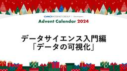
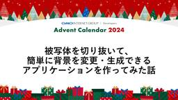
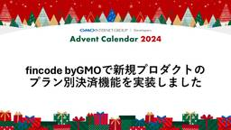

GMO Developers
https://developers.gmo.jp
「GMO Developers」は、GMOインターネットグループが開発者向けの技術情報やイベント情報をお届けするテックブログです。
フィード
様々な事業部、職種向けにDify講習会を実施した話 1
1
GMO Developers
はじめに こんにちは！今年の4月に新卒入社したどすこいです。GMOペパボでフルスタックエンジニアとして日々学びながら開発しています！現在は、マルチプレイ用ゲームサーバーを簡単にセットアップできる「ロリポップ! for G […]
14時間前
[協賛レポート]CODE BLUE 2024
GMO Developers
イベント概要 日時：2024年11月14日（木）〜15日（金）会場：ベルサール高田馬場（住友不動産新宿ガーデンタワーB2・1F）参加費用：有料・事前登録制開催形式：対面形式でのカンファレンス主催：CODE BLUE実行委 […]
1日前
JPAAWG 7th General Meeting 参加レポート
GMO Developers
JPAAWGとは？ Japan Anti-Abuse Working Group (JPAAWG) は、 インターネットを中心とした電気通信環境の利用促進を目的とし、 それらの健全な発展を脅かす各種ネットワーク上の脅威に […]
1日前

データサイエンス入門編「データの可視化」 3
GMO Developers
はじめに プレゼン資料や新聞、ニュースなど至る所で目にするグラフ。データを整理し、一目で情報を伝えるために欠かせないツールです。しかし、グラフの種類や使い方を意識して選んでいる人はどれくらいいるでしょうか？適切なグラフを […]
2日前
業務効率化: Cloudflare APIにてAレコード変更
GMO Developers
はじめに Aレコード（ドメイン名をIPv4アドレスにマッピングするためのDNSレコードの一種）の変更作業はそれほど頻繁には発生しないかもしれませんが、複数のサイトを運営していると、この作業が必要になることがあります。Cl […]
2日前
知らないと危険！Cookieのセキュリティリスクと対策 27
GMO Developers
はじめに 今回この記事を書こうと思った経緯としては、最近の業務でCookieについて理解を深める機会がありそれを共有しようと思ったからです。Cookieは普段あまり意識することなく使用していますが、適切な設定を行わなけれ […]
3日前
オフショア開発を支える技術 1
GMO Developers
1. はじめに GMO ReTechの永橋です。サービスをローンチしてから4年が経ちましたが、4年間のほとんどがオフショア開発とともにありました。記事のタイトルには「支える技術」とありますが、ここでは技術（テクノロジー） […]
4日前
「攻めと守りの融合」でサイバー犯罪に立ち向かう ホワイトハッカー集団・GMOイエラエが語る、サイバーセキュリティの最前線
GMO Developers
ホワイトハッカーが語る、最先端のサイバー犯罪とその対策 デジタル社会の進展とともに、サイバー攻撃の手法は日々進化を遂げています。企業や組織を狙ったランサムウェアやフィッシング詐欺など、その手口は巧妙化の一途をたどり、従来 […]
4日前

被写体を切り抜いて、簡単に背景を簡単に変更・生成できるアプリケーションを作ってみた話 1
GMO Developers
はじめに こんにちは！GMOペパボ株式会社所属の横山です。社内ではあだ名で呼び合う文化があり、はるおつと呼ばれています。普段は誰でも簡単にマルチプレイ用ゲームサーバーが立てられる機能を提供する、ロリポップ for gam […]
5日前

fincode byGMOで新規プロダクトのプラン別決済機能を実装しました 10
GMO Developers
fincode byGMOとは GMOイプシロン株式会社が提供する決済サービスです。https://www.fincode.jp/ 「エンジニアファーストの設計、洗練されたUXで最高の開発体験を」という言葉通り、エンジニ […]
6日前